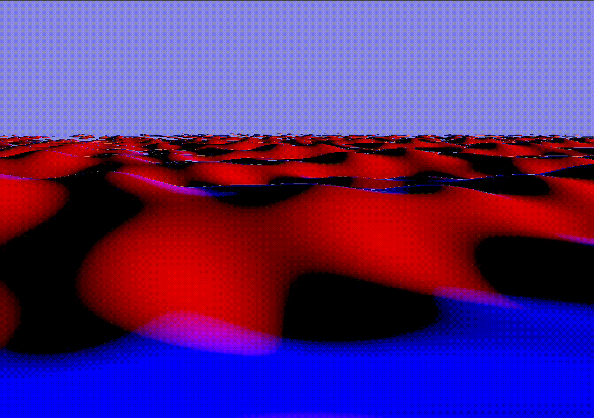

Floating paper lanterns on a lake created using ray marching and signed distance functions (SDFs).
The lantern is composed of multiple parts that all have their inidvidual SDFs: Paper, metal, wood. The SDFs use primitives and operations from this article.
float sdfPaper(vec3 p) {
p -= vec3(0,-1,0);
float box = sdBox(p - vec3(0,4.0,0), vec3(2.0));
float cylinder = sdCappedCylinder(p - vec3(0,1.5,0), 1.5, 0.75);
float cylinder_boundary = opOnion(cylinder, 0.03);
return opSubtraction(box, cylinder_boundary);
}
float sdfWood(vec3 p) {
p.y += 1.0;
return sdBox(p, vec3(1.1, 0.04, 1.1));
}
float sdfMetal(vec3 p) {
p -= vec3(0,-1,0);
float torus1 = sdTorus(p + vec3(0,-0.08,0), vec2(0.75, 0.05));
float torus2 = sdTorus(p + vec3(0,-2.0,0), vec2(0.75, 0.05));
float tori = opUnion(torus1, torus2);
float cylindri = sdCappedCylinderOffset(opSymXZ(p + vec3(0,-1,0)), 1.03, 0.05, vec2(0.75 * 0.707));
return opSmoothUnion(cylindri, tori, 0.1);
}
The different parts are shaded differently. To distinguish between them while shading the SDFs of the indiviual components are evaluated again to check which shading function should be used.
float dPaper = sdfPaper(p);
float dWood = sdfWood(p);
float dMetal = sdfMetal(p);
bool isMetal = dMetal < dPaper && dMetal < dWood;
bool isPaper = dPaper < dMetal && dPaper < dWood;
if (isMetal) {
return shadeMetal(...);
}
else if (isPaper) {
return shadePaper(...);
}
else {
return shadeWood(...);
}
To create a spatially variant surface appearance of the paper, a normal map is sampled and used to offset the normals of the surface. The resulting normal can be seen in the image above. Additionally, a simple noise map is sampled to change the albedo color of the paper. To sample these textures cylindrical UV coordinates are calculated.
vec2 calcCylindricalUVs(vec2 dir, vec3 p) {
float longitude = atan(-dir.y, dir.x); // [-pi;pi]
return vec2(
(longitude / 3.141) * 0.5 + 0.5,
(p.y * 0.5) + 0.5
);
}The sampling of the normal map does not yield a correct normal, but the visual result looks good, so this method is fine. Correct normal map sampling would be more complicated.
vec2 normalXZ = normalize(vec2(p.x, p.z));
vec2 uv = calcCylindricalUVs(normalXZ, p);
vec3 normalNoise = texture(normal_noise_texture, uv * vec2(2,1)).xyz;
normalNoise = normalNoise * 2.0 - 1.0;
float noise = texture(noise_texture, uv * vec2(2,1)).x;
normal = normalize( normal + normalNoise * 0.35 );
albedo *= 1.0 - noise * 0.4;All materials (paper, metal, wood) have two types of shading: the shading from a directional light (the moon) and the shading from a point light (the candle). Lambertian reflection and the Phong reflection model are used.
The lighting of the candle on the paper uses lambertian shading and takes the distance to the point light into account:
vec3 l = normalize(lightPos - p);
float d = distance(lightPos, p);
float nDotL = dot(normal, l);
float lighting = nDotL * lightStrength / (d*d);
vec3 light = abs(lighting) * lightColor;To simulate soft light flickering the sum of multiple sin waves with different amplitudes and frequencies are used:
float flickerValue =
(cos( TIME * 2.0 * PI) + 2.0) * 0.15
+ (cos( TIME * 3.0 * PI) + 1.0) * 0.1
+ (cos( TIME * 2.5 * PI) + 1.0) * 0.1;
lightStrength *= mix(0.3, 0.8, flickerValue);When creating an SDF of infinitely many SDFs that are not symmetric, one has to take special care as explained in this article. Every one of our lanterns has a unique offset (acquired by sampling a blue noise texture), so they are not symmetric. Code from the article above has been taken and modified to fit these needs:
float repeated( vec3 p3 ) {
vec2 p = p3.xz;
vec2 id = round(p/gridSize);
vec2 o = sign(p-gridSize*id); // neighbor offset direction
float d = 1e20;
for( int j=0; j<2; j++ )
for( int i=0; i<2; i++ ) {
vec2 rid = id + vec2(float(i),float(j))*o;
vec4 blueNoise = blueNoiseAtID(rid);
vec2 rCenterPos = gridSize*rid - offset(blueNoise.xy);
vec2 r = p - rCenterPos;
d = min(d, sdf(vec3(r.x, p3.y, r.y)));
}
return d;
}The repetition was also taken into account when shading the lantern.

To create a lake surface a plane SDF from this article was used and displaced. The displacement is a sum of sine waves in different directions, with different amplitudes and frequencies.
The image shows the water with an increased height for showcase purposes. It is shaded using the x and z direction of its normals.
float waterHeightAt(vec2 p) {
vec2[] dirs = { // normalized
vec2(-0.371391, 0.928477),
vec2( 0.0, -1.0),
vec2(-0.624695, 0.780869),
vec2(-0.768221, -0.640184),
vec2(0.371391, 0.928477)
};
float displacement = 0.0;
float a = 0.15;
float w = 0.4;
for (int i = 0; i < 5; i++) {
a *= 0.6;
w *= 1.4;
vec2 dir = dirs[i];
float dxz = dot(dir, p);
displacement += a * sin(dxz * w);
}
return displacement;
}
float sdfWater(vec3 p) {
return sdPlane(p, vec3(0,1,0), 1.0) + waterHeightAt(p.xz);
}
To animate the lake over time, the TIME variable was
included in the displacement calculation:
displacement += a * sin(
dxz * w + TIME * 2.5
);This HDRI map (CC0) was used and slightly modified using the image manipulation software GIMP. Height based fog was added to the environment shading.
vec3 sky(vec3 dir) {
dir = normalize(dir);
float fog = clamp(mix(1, -1.5, dir.y),0,1);
fog = smoothstep(0,1,fog);
fog = pow(fog, 15.0);
float thetaa = acos(dir.y);
float phii = atan(dir.z, dir.x);
return mix(
texture(environment, vec2(phii/TAU, thetaa/PI)).rgb,
_colorD, fog);
}To create reflections in the lake the ray is reflected from the water surface and used for the environment shading.
Ray reflectedRay = Ray(p, reflect(ray.dir, normal)); // reflect from water surface
return sky(reflectedRay.dir) * waterReflectionStrength + waterColor;
To adjust the height of the lanterns to match the height of the
surface, the waterHeightAt function is used when
determining the position of the lantern. Additionally, the lantern is
rotated based on the normal of the water surface. However, the normal is
not calculated accurately, but only the biggest sin wave that is used to
create the wave displacement is taken into account. This results in a
more natural motion and also improves performance as it is evaluated
multiple times for every ray marching step.
float waterHeightRoughAt(vec2 p) {
float a = 0.15;
float w = 0.4;
vec2 dir = vec2(-0.371391, 0.928477); // normalized
float dxz = dot(dir, p);
return a * sin(dxz * w + (TIME-0.2) * 2.5);
}
float sdfWaterRough(vec3 p) {
return sdPlane(p, vec3(0,1,0), 1.0) + waterHeightRoughAt(p.xz);
}
vec3 gradientWaterRough(vec3 p) {
const vec3 dx = vec3(GRADIENT_DT, 0.0, 0.0);
const vec3 dy = vec3(0.0, GRADIENT_DT, 0.0);
const vec3 dz = vec3(0.0, 0.0, GRADIENT_DT);
return vec3( (sdfWaterRough(p + dx) - sdfWaterRough(p - dx)) / (2.0 * GRADIENT_DT),
(sdfWaterRough(p + dy) - sdfWaterRough(p - dy)) / (2.0 * GRADIENT_DT),
(sdfWaterRough(p + dz) - sdfWaterRough(p - dz)) / (2.0 * GRADIENT_DT)
);
}
To reflect the lantern on the lake, the reflected ray that was mentioned in “Sky reflections in the lake” is used to start another ray marching process.
Ray reflectedRay = Ray(p, reflect(ray.dir, normal)); // reflect from water surface
vec3 rp = p;
if (!march(reflectedRay, rp)) { // no lantern hit - shade water
return sky(reflectedRay.dir) * waterReflectionStrength + waterColor;
}
else { // lantern hit
return shadeLanterns(...);
}